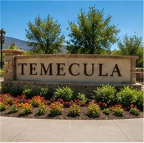

⌂
ABA In-Home Therapy
One-on-one therapy supporting communication, social, play, daily living and learning skills while increasing independence.
Learn more →WonderKids Behavioral Services provides individualized Applied Behavior Analysis therapy for children and adolescents ages 2–18 in the comfort of home.

Personalized services designed around your child’s strengths, needs and everyday environments.
One-on-one therapy supporting communication, social, play, daily living and learning skills while increasing independence.
Learn more →
Practical coaching and collaboration that help adults support progress across home, school and community settings.
Learn more →
Data-informed assessment to understand why behavior occurs and guide individualized, effective intervention planning.
Learn more →
Our mission is to help children discover their strengths, build essential skills and participate more fully in family, school and community life. We combine evidence-based ABA with warmth, creativity and close family partnership.
Tell us what support your family is seeking.
We help verify insurance coverage and next steps.
We learn about strengths, needs and daily routines.
Goals are selected with your family.
Services start in the home with ongoing support.
Progress is reviewed and plans evolve as needed.

Our team is here to answer questions and guide your family through the first steps.
Schedule a Free Consultation